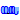
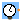
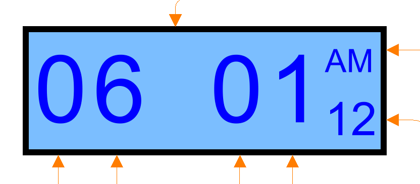

| Name | Description |
|---|---|
| SignalBus | |
|  WatchDisplay | |
|  Time | |
| DisplayDecoder | |
| AlarmTrigger | |
| WatchController |
| Name | Description |
|---|---|
| a | |
| b | |
| c | |
| d |
Displays four large digits, one small digit and one two letter text according to signals provided through the IntegerInputs. The top IntegerInput defines the level of illumination of the display.

Signal inputs are:
| Name | Description |
|---|---|
| precision |
| Name | Description |
|---|---|
| large_digit1 | |
| small_digit | |
| text_digit | 1 = Mo, 2 = Tu, 3 = We, 4 = Th, 5 = Fr, 6 = Sa, 7 = Su, 8 = AM, 9 = PM, 10 = Ch, 11 = SW |
| illumination | 0 = dark {0,95,191}, 1 = standard {127,191,255}, 2 = bright {159,223,223} |
| large_digit2 | |
| large_digit3 | |
| large_digit4 |
Outputs a time integer signal depending on what mode the watch is currently in. As all four time signals, current time, time setting, alarm1 setting and alarm2 setting should be decoded in the exact same fashion, the output of Time is handled the same in DisplayDecoder. This model also contains the actual clock that makes one tick every second. when a user sets a new time, the discrete state in TriggeredAdd will be reset and the output will re-set to that value and continue ticking.
| Name | Description |
|---|---|
| signalBus | |
| y |
Decodes a number of integer signals (input at the bottom) into six digits to be displayed on a LED display according to definition in the WatchDisplay. Depending on the selected mode, the signals are masked in order to show the chosen entity correctly.
| Name | Description |
|---|---|
| time_signal | Raw input signal |
| large_digit_1 | |
| large_digit_2 | |
| large_digit_3 | |
| large_digit_4 | |
| small_digit | |
| text_digit | |
| time_mode | Raw input signal |
| date_mode | Raw input signal |
| year_mode | Raw input signal |
| stopwatch_mode | Raw input signal |
| day_signal | Raw input signal |
| date_signal | Raw input signal |
| year_signal | Raw input signal |
| stopwatch_signal | Raw input signal |
| mode_signal | Raw input signal |
Logic for deciding whether any alarm should sound. The logic is defined in D. Harel's paper (see reference on package level) as:
T1 is the time set when alarm1 will sound.
T2 is the time set when alarm1 will sound.
P1 = alarm1 enabled and (alarm2 disabled or not T1 == T2)
P2 = alarm2 enabled and (alarm1 disabled or not T1 == T2)
P = alarm1 enabled and alarm2 enabled and T1 == T2
Alarm 1 will beep when time becomes equal to T1 and P1 is true.
Alarm 2 will beep when time becomes equal to T2 and P2 is true.
Both alarms will beep when time becomes equal to T1 and P is true.
| Name | Description |
|---|---|
| alarm1_enabled | |
| alarm2_enabled | |
| T1 | |
| T2 | |
| P1 | |
| P2 | |
| P | |
| alarms_beep | |
| T_hits_T1 | |
| T_hits_T2 |
The watch controller contains the clock functionality, gathering of stopwatch signals, time settings and modes from different parts of the wristwatch that are gathered, grouped together and finally decoded into outputs to the LED display.
| Name | Description |
|---|---|
| display_node | |
| large_digit1 | |
| large_digit2 | |
| large_digit3 | |
| large_digit4 | |
| small_digit | |
| text_digit |